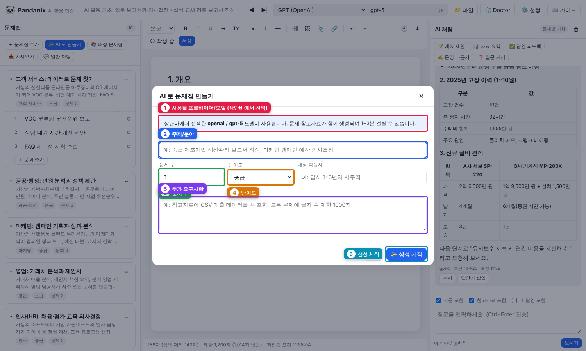

6. AI 로 문제집 만들기
주제만 입력하면 AI 가 문제 지문 + 제출 형식 + 참고자료(md/csv) + 힌트 + 평가 기준을 한 번에 만들어 줍니다.
절차
- 상단바에서 사용할 프로바이더/모델 선택 (긴 JSON 을 안정적으로 쓰는 상위 모델 권장)
- 왼쪽 ✨ AI 로 만들기
- 아래 입력값을 채우기
- ✨ 생성 시작 → 진행 상황(수신 글자 수) 표시 → 완료되면 목록에 추가됨
- 생성된 문제를 열어 지문·자료를 검토하고 필요하면 ✏️ 로 수정
입력값

① 사용될 프로바이더/모델 ② 주제 ③ 문제 수 ④ 난이도 ⑤ 추가 요구사항 ⑥ 생성 시작
| 항목 | 예 |
|---|---|
| 주제/분야 | 중소 제조기업 생산관리 보고서 작성 |
| 문제 수 | 3 (1~10) |
| 난이도 | 초급 / 중급 / 고급 |
| 대상 학습자 | 입사 1~3년차 사무직 |
| 추가 요구사항 | 참고자료에 CSV 매출 데이터 포함, 모든 문제 1000자 제한 |
기존 문제집에 문제 추가
문제집 ⋯ 메뉴 → ✨ AI 로 문제 추가. 같은 입력 폼이며 결과가 해당 문제집 뒤에 붙습니다.
시간과 비용
- 문제 1개당 참고자료 2~4개가 생성되어 출력이 깁니다 (문제 3개 ≈ 1~2만 토큰 출력)
- 1~3분 걸릴 수 있습니다. 창을 닫으면 취소됩니다
결과가 이상할 때
| 증상 | 원인/조치 |
|---|---|
| "응답에서 JSON 을 찾지 못했습니다" | 모델이 JSON 형식을 어김. 더 큰 모델로 재시도하거나 문제 수를 줄이기 |
| 참고자료 수치가 서로 안 맞음 | 생성 특성. 문제를 열어 자료를 직접 수정 (참고자료 탭 → 삭제 후 텍스트 자료 작성) |
| 너무 쉬움/어려움 | 난이도와 "추가 요구사항" 에 구체적으로 적기 (예: "자료 간 상충 정보 포함") |
(관리자) 프롬프트 바꾸기
생성 지시문은 server/lib/prompt.js 의 buildWorkbookGenerationPrompt 입니다. JSON 스키마를 바꾸면 server/routes/generate.js 의 saveGenerated 도 맞춰야 합니다.